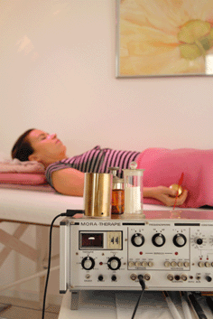

BioresonanzDiese physikalische Therapie Methode nach Dr. Morell verwende ich zur Therapie. In dieser Ganzheitsbetrachtung wird Krankheit als die Summe gestörter oder beeinträchtigter Regulationsvorgänge betrachtet. Von der Biophysik aus betrachtet ist unser Körper ein System, das in eigenen charakteristischen Resonanz-Frequenzen schwingt. Ein gesunder Organismus zeichnet sich durch ein kohärentes, harmonisches Muster elektromagnetischer Schwingungen aus. In einem erkrankten, aus der Balance geratenen Organismus bestehen neben diesen Grundschwingungen pathologische, disharmonische Schwingungen. Umgekehrt können Fremdschwingungen wie z.B. Elektrosmog, Krankheitserreger, Umweltgifte etc. die Ursache von Krankheiten sein. So kann grundsätzlich das gesamte Organsystem unterstützt, entlastet oder entgiftet werden. Bewährte Indikationen:
|
 |